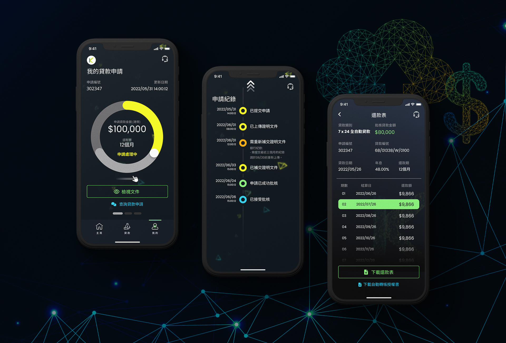
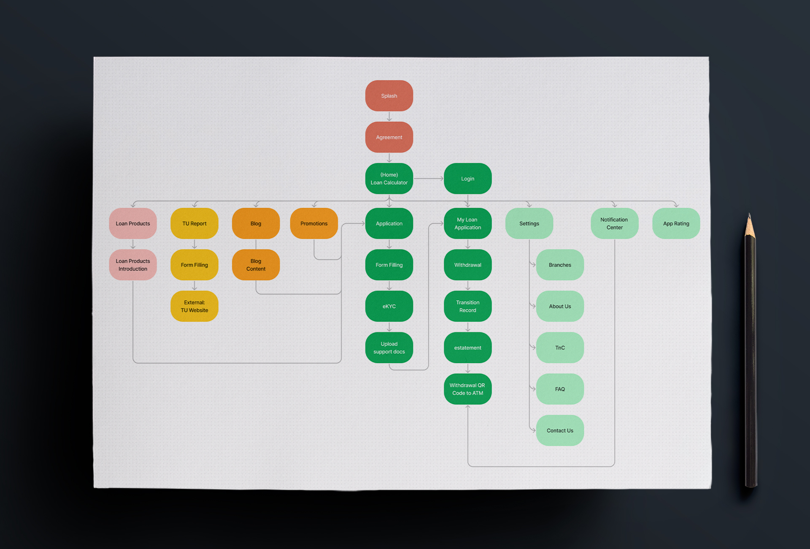

KCash Loan Mobile App
https://www.kcash.com
Roles
User Research
Wireframe & Roadmap
User Interface Design
Quality Assurance


Previous Project
Next Project
This is Shirley Au's online portfolio of multimedia design since 2007. © 2017 SASC.ONCEPT (v5). All rights reserved.